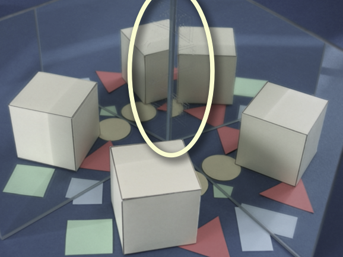
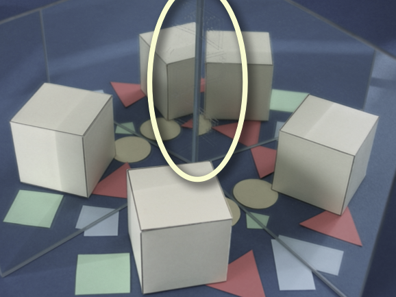
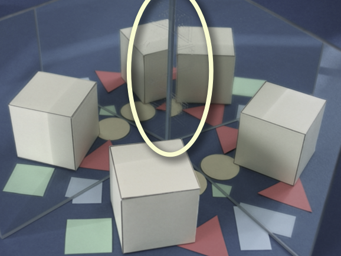

If one considers real physical mirrors the mirror images can clearly not overlap each other. Instead, at every position there is exactly one
mirror image. At the edge where the two mirrors meet some kind of "break line" occurs whenever the angle between the mirrors is not a divisor of 180°.
The simulation an the right again allows to control the angle by moving the slider.
You can select the reflected object by clicking on the small icons
an the right. The position of the objects can be controlled by moving the
small green points.
|

|
Photographs of a real pair of mirrors for angles of 90° and 85°.